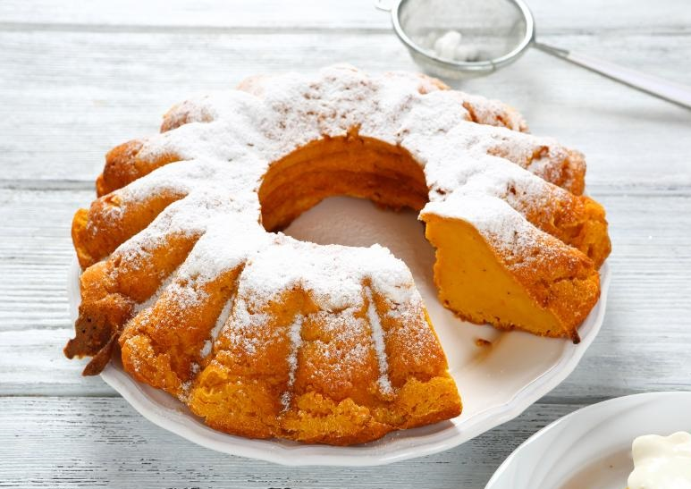
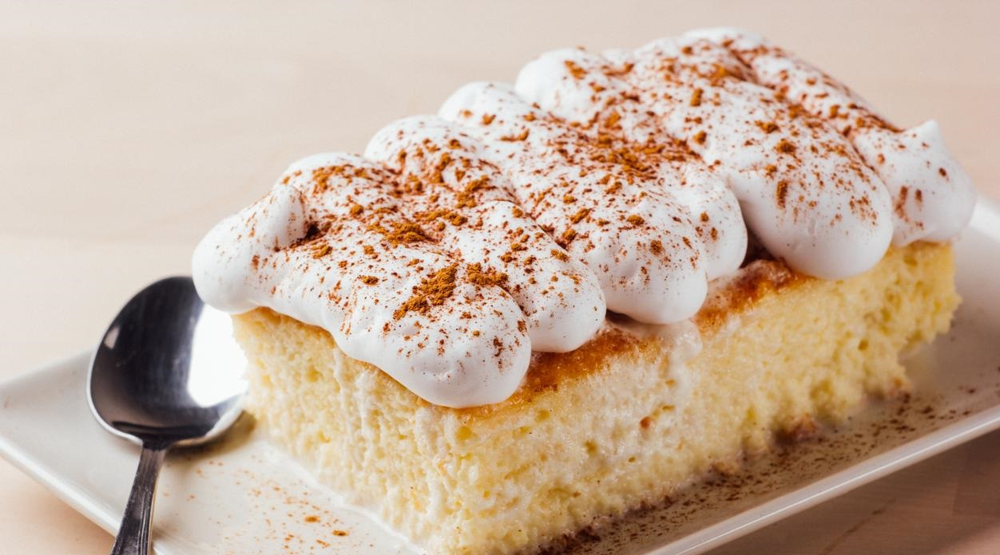

8 unidades de Huevo
4 tazas de Harina (560 gramos)
2 tazas de Azúcar (400 gramos)
1 cucharadita de Polvo Royal
60 gramos de Cacao en polvo
4 barras de Margarina
1 cucharadita de Vainilla
1 vaso de Leche
1 unidad de Ralladura de naranja
¼ taza de Aceite
Primero, bates las claras a punto de nieve (de 6 huevos). Luego bates la margarina con el azúcar hasta que te quede cremosa. En cuanto este bien cremosa le vas agregando la harina y alternándola con las amarillas, claras, y leche.Vacías un poco más de la mitad en la tortera y con la restante le agregas el chocolate, los dos huevos y el aceite y un poquito mas de azúcar. Puede ser como unas 5 cucharadas esto a la mezcla de chocolate.Por ultimo, le agregas el chocolates en el medio y vas dando vuelta a la torta de modo que te quede siempre entre los lados blanco, das unos golpes al molde y con un cuchillo tratas de hacer un espiral al rededor de toda la torta con el cuchillo. Das otros golpes y lo llevas al horno por una hora a 350º F. (180º C) ya precalentado el horno.Por una hora.

Torta de Auyama
3 kilogramos de Auyama
2 tazas de Azúcar (400 gramos)
6 unidades de Huevo
1 taza de Leche en polvo
2 tazas de Harina (280 gramos)
250 gramos de Mantequilla
1 cucharadita de Vainilla
1 pizca de Canela
Hierve la auyama y escúrrela. Luego, cuando se haya enfriado, se tritura con ayuda de un tenedor o pasapuré hasta conseguir una textura suave, como la de un puré. Aparte, mezcla la mantequilla con el azúcar y, poco a poco, ve integrando los huevos, la leche en polvo y la harina. Puedes utilizar una batidora para hacer la mezcla, varillas eléctricas o manuales. También añade canela en polvo y esencia de vainilla al gusto.
Por último, añade la auyama previamente triturada a la mezcla anterior e intégrala. La masa de este bizcocho casero debe quedar suave y lo más homogénea posible. Para terminar con la preparación de la torta de auyama casera, vierte toda la mezcla en un molde engrasado y enharinado, y hornéala a temperatura media por unos 20 minutos o hasta que esté lista. El molde utilizado es de unos 20 cm de diámetro.Disfruta de este magnifico bizcocho de calabaza durante la merienda o sírvelo como postre con un poco de merengue, un poco de caramelo o mermelada. Si lo prefieres, también puedes decorar la torta con chocolate fundido, ya que la mezcla de ambos ingredientes resulta realmente deliciosa.

Torta tres leches
6 huevos
200 gramos de azúcar (1 taza)
200 gramos de harina
1 cucharadita de esencia de vainilla
1 cucharadita de polvo para hornear
Para la crema:
1 lata de leche condensada (grande)
1 lata de leche evaporada (grande)
1 lata de crema de leche (grande)
Para el merengue:
3 claras de huevo
1 taza de azúcar (al gusto)
Empieza la tarta de tres leches fácil por la elaboración del bizcocho, pero antes precalienta el horno a 200 ºC. Coge un recipiente y bate los huevos hasta que adquieran una textura espumosa, luego agrega el azúcar poco a poco y sin dejar de batir. Deberás batir hasta que la mezcla triplique su volumen. Después, agrega la harina ya tamizada junto con el polvo de hornear, bátela haciendo movimientos envolventes. Es aconsejable que la introduzcas poco a poco para que te sea más fácil integrarla. Incorpora también la esencia de vainilla y sigue mezclando. Cuando tengas la masa del bizcocho para las tres leches, unta un poco de mantequilla y harina en un molde de horno y viértela en él. Deberás hornearlo durante 25-30 minutos.Se recomienda pinchar el bizcocho con un palillo para asegurarse de que realmente está hecho por dentro una vez pasado el tiempo. Cuando esté listo, retíralo del horno y deja que se enfríe.Mientras se hornea, puedes preparar la crema de tres leches. Para ello, vierte el contenido de las tres latas (condensada, evaporada y crema de leche) en un recipiente con la capacidad suficiente y bátelas. Con esta mezcla bañarás el bizcocho en el mismo molde donde se horneó. Ahora es el turno del merengue. Es muy sencillo, solo tienes que batir las claras a punto de nieve e ir agregando, poco a poco, el azúcar. Debes batir hasta que el merengue adquiera la consistencia adecuada. La cantidad de azúcar es al gusto, de manera que ve probando la mezcla conforme la vas añadiendo para determinar si ha alcanzado el punto dulce que deseas. Cuando el bizcocho haya reposado, vierte la mezcla de tres leches sobre él y deja que se empape por completo. Es probable que la torta de tres leches tarde aproximadamente una hora en impregnarse de la mezcla, todo dependerá del grosor que tenga el biscocho. Cuando el bizcocho haya absorbido por completo la mezcla, ya puedes cubrirlo con el merengue. Aquí deberás decorarlo como gustes. Una vez terminada la torta tres leches, puedes adornarla con un poco de canela espolvoreada por encima, si gusta, o hacer un caramelo suave y dejar caer sobre el bizcocho de tres leches en forma de hilo fino.
 Al pie de la receta
Al pie de la receta